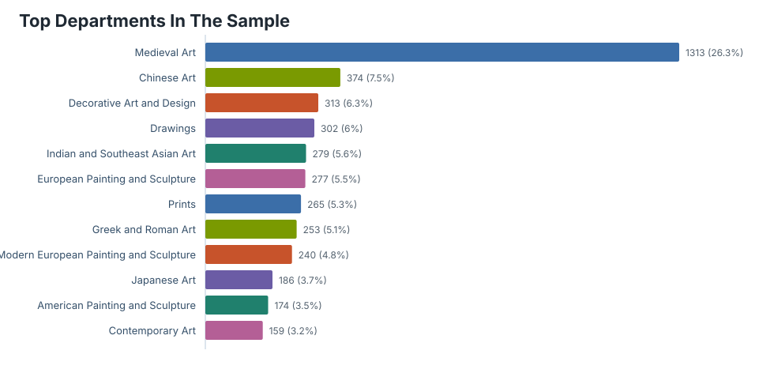
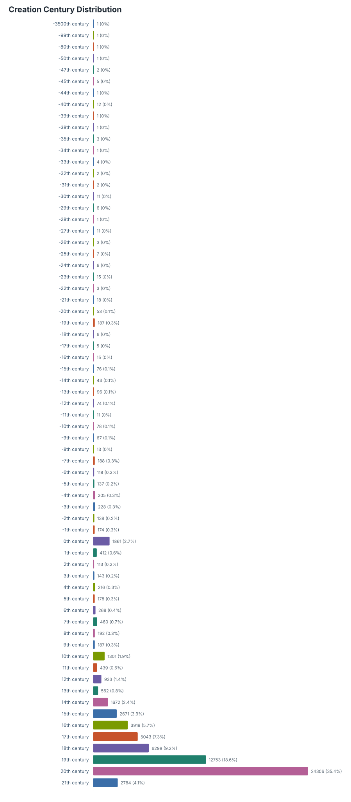
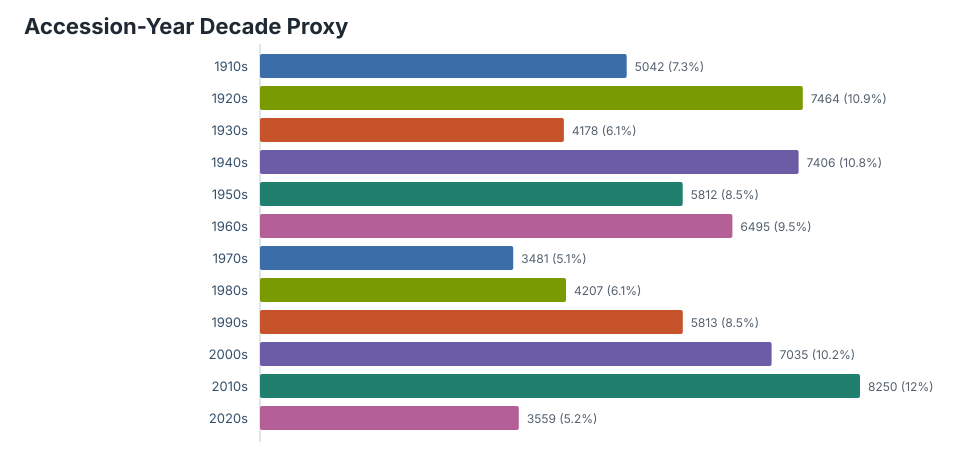

A structured museum API turns a full open collection into analyzable records, making department, date, culture, rights, and image-availability patterns inspectable for one institution.
68742 full-source corpus 68743 total available 1 sample share

| value | count | share |
|---|---|---|
| Prints | 21155 | 0.3077 |
| Photography | 10186 | 0.1482 |
| Drawings | 5445 | 0.0792 |
| Textiles | 5261 | 0.0765 |
| Decorative Art and Design | 5220 | 0.0759 |
| Medieval Art | 4975 | 0.0724 |
| Indian and Southeast Asian Art | 3425 | 0.0498 |
| Japanese Art | 3420 | 0.0498 |
| Chinese Art | 2638 | 0.0384 |
| Egyptian and Ancient Near Eastern Art | 1069 | 0.0156 |
| Art of the Americas | 977 | 0.0142 |
| Contemporary Art | 866 | 0.0126 |
| European Painting and Sculpture | 727 | 0.0106 |
| American Painting and Sculpture | 709 | 0.0103 |
| Greek and Roman Art | 686 | 0.01 |

| value | count | share |
|---|---|---|
| 20th century | 24306 | 0.3536 |
| 19th century | 12753 | 0.1855 |
| 18th century | 6298 | 0.0916 |
| 17th century | 5043 | 0.0734 |
| 16th century | 3919 | 0.057 |
| 21th century | 2784 | 0.0405 |
| 15th century | 2671 | 0.0389 |
| 0th century | 1861 | 0.0271 |
| 14th century | 1672 | 0.0243 |
| 10th century | 1301 | 0.0189 |
| 12th century | 933 | 0.0136 |
| 13th century | 562 | 0.0082 |
| 7th century | 460 | 0.0067 |
| 11th century | 439 | 0.0064 |
| 1th century | 412 | 0.006 |
| 6th century | 268 | 0.0039 |
| -3th century | 228 | 0.0033 |
| 4th century | 216 | 0.0031 |
| -4th century | 205 | 0.003 |
| 8th century | 192 | 0.0028 |
| -7th century | 188 | 0.0027 |
| -19th century | 187 | 0.0027 |
| 9th century | 187 | 0.0027 |
| 5th century | 178 | 0.0026 |
| -1th century | 174 | 0.0025 |
| 3th century | 143 | 0.0021 |
| -2th century | 138 | 0.002 |
| -5th century | 137 | 0.002 |
| -6th century | 118 | 0.0017 |
| 2th century | 113 | 0.0016 |
| -13th century | 96 | 0.0014 |
| -10th century | 78 | 0.0011 |
| -15th century | 76 | 0.0011 |
| -12th century | 74 | 0.0011 |
| -9th century | 67 | 0.001 |
| -20th century | 53 | 0.0008 |
| -14th century | 43 | 0.0006 |
| -21th century | 18 | 0.0003 |
| -16th century | 15 | 0.0002 |
| -23th century | 15 | 0.0002 |
| -8th century | 13 | 0.0002 |
| -40th century | 12 | 0.0002 |
| -11th century | 11 | 0.0002 |
| -27th century | 11 | 0.0002 |
| -30th century | 11 | 0.0002 |
| -25th century | 7 | 0.0001 |
| -18th century | 6 | 0.0001 |
| -24th century | 6 | 0.0001 |
| -29th century | 6 | 0.0001 |
| -17th century | 5 | 0.0001 |
| -45th century | 5 | 0.0001 |
| -33th century | 4 | 0.0001 |
| -22th century | 3 | 0 |
| -26th century | 3 | 0 |
| -35th century | 3 | 0 |
| -31th century | 2 | 0 |
| -32th century | 2 | 0 |
| -47th century | 2 | 0 |
| -28th century | 1 | 0 |
| -34th century | 1 | 0 |
| -3500th century | 1 | 0 |
| -38th century | 1 | 0 |
| -39th century | 1 | 0 |
| -44th century | 1 | 0 |
| -50th century | 1 | 0 |
| -80th century | 1 | 0 |
| -99th century | 1 | 0 |

| value | count | share |
|---|---|---|
| 2010s | 8250 | 0.12 |
| 1920s | 7464 | 0.1086 |
| 1940s | 7406 | 0.1077 |
| 2000s | 7035 | 0.1023 |
| 1960s | 6495 | 0.0945 |
| 1990s | 5813 | 0.0846 |
| 1950s | 5812 | 0.0845 |
| 1910s | 5042 | 0.0733 |
| 1980s | 4207 | 0.0612 |
| 1930s | 4178 | 0.0608 |
| 2020s | 3559 | 0.0518 |
| 1970s | 3481 | 0.0506 |
| value | count | share |
|---|---|---|
| has-image | 41444 | 0.6029 |
| no-image | 27298 | 0.3971 |